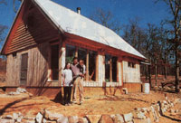

[1] Post-and-beam construction was chosen for its simplicity, low cost, and adaptability to a sloping site. [2] 2 X 6 framing was toenailed between the posts, then tar paper and reverse board-and-batten sailing were applied directly to it. Vertical framing was used at the gable ends to support horizontal shiplap siding. [3] Here you can see the purlin ties connecting the 2 X 12 rafters to the 2 X 10 purlins.